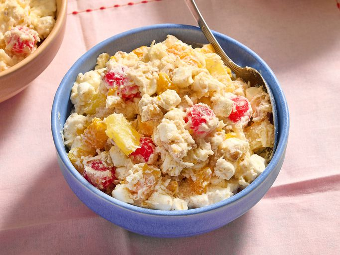

Ambrosia
Home

Description
This creamy ambrosia salad is easy, easy, easy! If you like maraschino cherries, you can use them; if not, remember there are maraschino cherries in your fruit cocktail. Also, a little juice from the maraschino cherries will color your fruit salad a festive red.
Ingredients
- 3 cups miniature marshmallows
- 2 ½ cups shredded coconut
- 11 oz mandarin oranges, drained
- 10 oz maraschino cherries, drained (Optional)
- 8 oz frozen whipped topping, thawed
- 8 oz pineapple chunks, drained
- 8 oz fruit cocktail, drained
- ½ cup chopped walnuts
- 1 tsp ground nutmeg (Optional)
- 1 tsp ground cinnamon (Optional)
Steps
- Gather all ingredients.
- Place marshmallows, coconut, oranges, cherries, whipped topping, pineapple, fruit cocktail, nuts, nutmeg, and cinnamon into a large serving bowl; mix until well combined.
- Place in the refrigetor to chill for 30 to 45 minutes before serving.
- Enjoy!